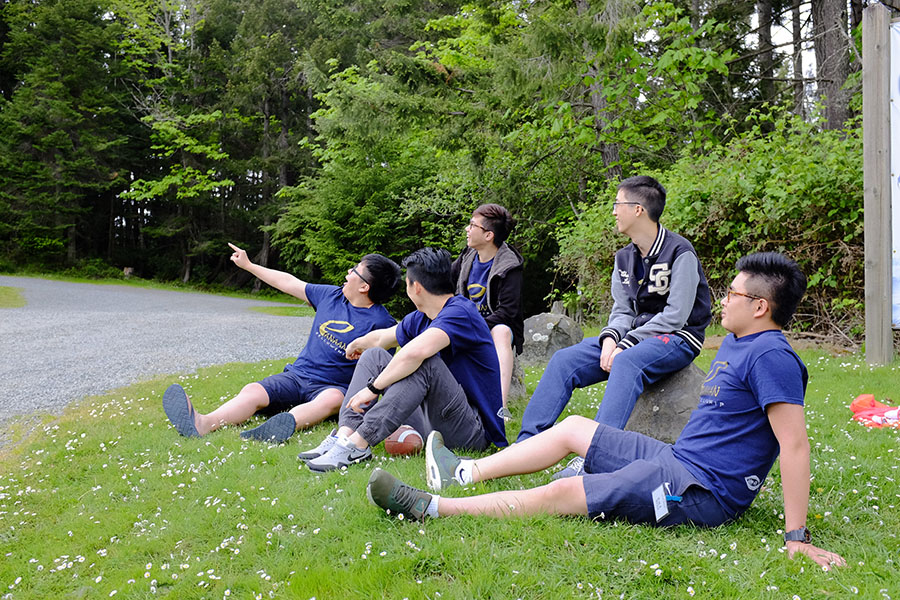
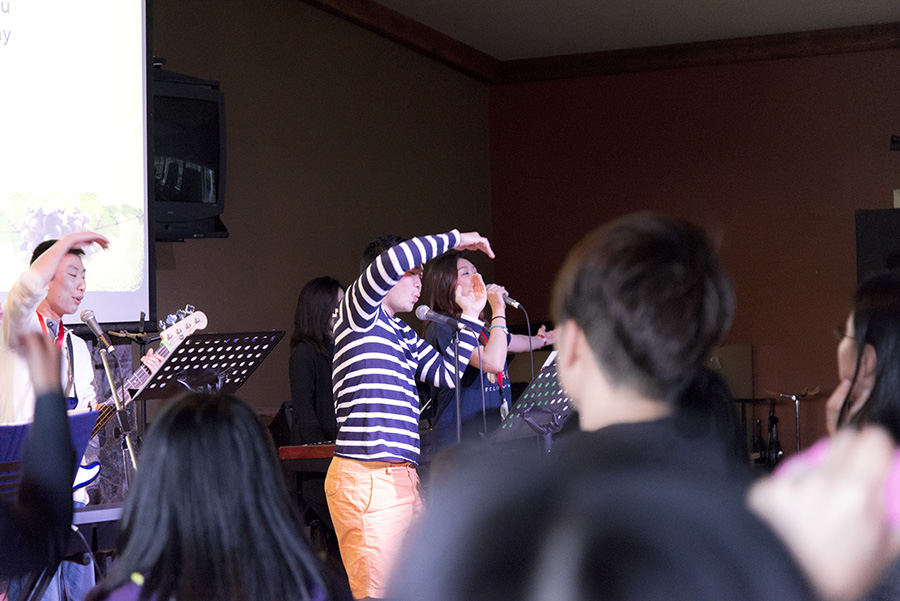
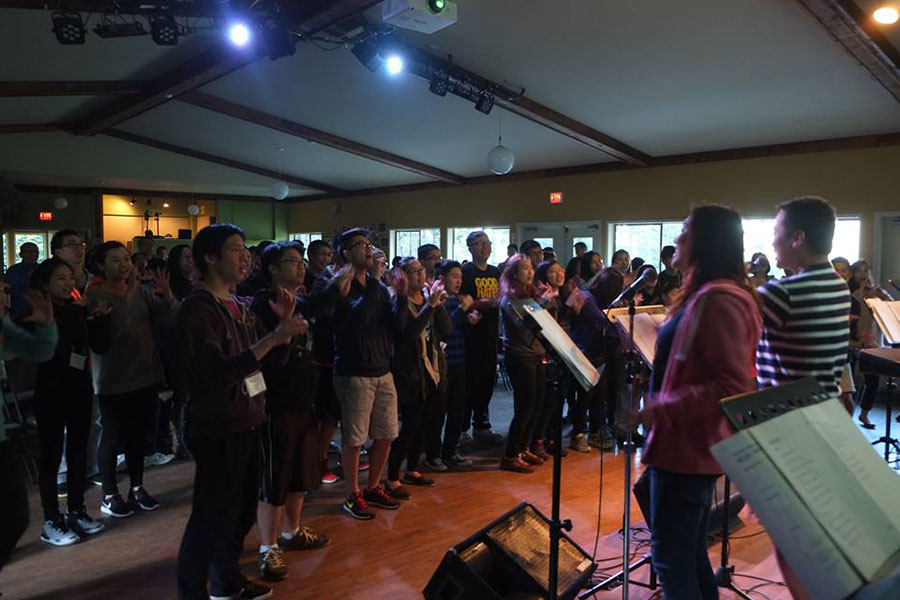
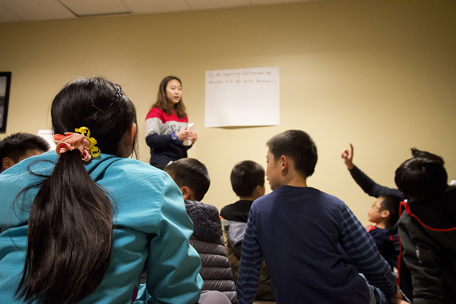
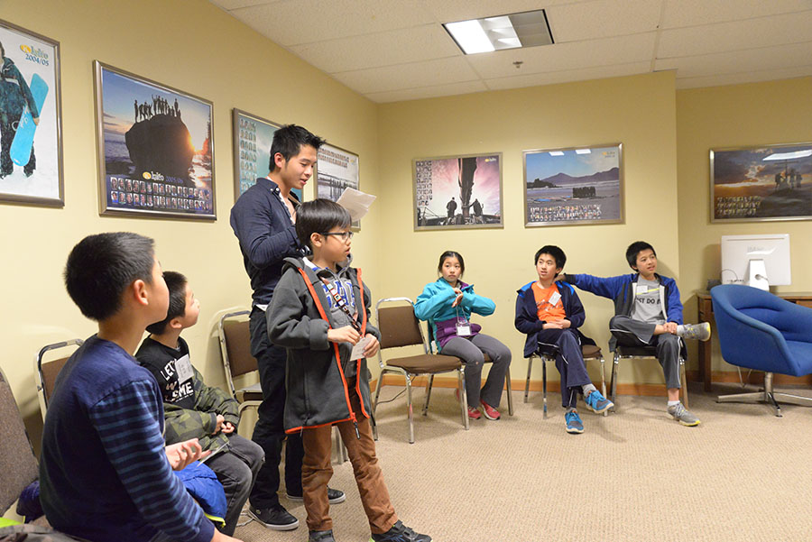

退修會不是一群退休人士開會！對於域多利華人宣道會來說，教會退修會是一個讓弟兄姊妹更好認識彼此，與你身邊最親密的家人朋友一起同建屬靈關係，或獨自安靜思想神的話語，與神建立更美好的關係的機會。我們生活在一個紛繁複雜的世界上，每天的勞累往往讓我們失去時間、心中的火熱去親近神，冷淡的基督徒生命甚至漸漸讓我們不再數算神的恩典，儘管我們深知神的大能，卻沒有一段安靜的時間把頭腦裡的愛神轉化為從內心流露出來的生命。而透過三天兩夜的時間，特約講員的信息，貼近生活的研習班，寧靜的禱告會，精彩的戶外活動，教會退修會再一次激勵我們的內心，把我們再一次拉進神的懷抱裡。
 本年度教會退修會已經來到第34個年頭，將會在溫哥華島上的Camp Qwanoes於4月28-30日舉行。今年的主題是“靠著聖靈行事”，是出自加拉太書5：25，為的是要鼓勵我們既然作為重新得救的基督徒，因著應許得著聖靈，就應跟從聖靈的引導作神的活祭。 在這三天的活動裡面，你會享受到四場由許宏度博士和Pastor Gareth Evans主領的培靈會，及兩個研習班，在星期六晚上我們還會有敬拜之夜，讓我們用美妙的歌聲讚美上帝。除此之外，我們也不會浪費了Camp Qwanoes美麗的景色，你可以選擇參加不同的戶外互動，與家人朋友共享美好的時光。現已接受報名！詳細活動時間表將會在此刊登。
除了豐富的成人屬靈活動外，當然不能少了別開生面的兒童節目。除了為兒童及青少年而設的聖經學習外，我們還有精彩的遊戲和製作手工的時間，所以不用懷疑，你的兒女肯定比你還要更加享受教會退修會！想一同感受這群孩子的歡樂嗎？與我們退修會籌委會聯繫，成為兒童節目團隊的一員吧！兒童節目詳細時間表將會不日在此刊登。
 
Our Email
2017churchretreat@gmail.com
This Website belongs to Victoria Chinese Alliance Church. Developed by 2017 Church Retreat Committee